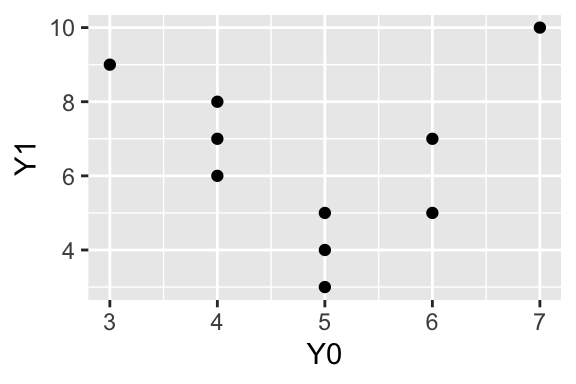

where \(S_t^2\) and \(S_c^2\) are the variances of the potential outcomes and \(S_{tc}^2\) is the variance of the individual treatment effects. Remember, we defined these as
But there’s a problem. This formula depends on quantities we cannot observe.
We defined \(S_t^2\) as the variance of all individuals’ potential outcomes under treatment, but we only observe \(Y_i(1)\) for the treated individuals.
Similarly, we only observe \(Y_i(0)\) for the control individuals.
And \(S_{tc}^2\) depends on the individual treatment effects \(\tau_i = Y_i(1) - Y_i(0)\), which we can never observe for any individual.
To make inferences about the ATE, we need to estimate the variance using only the observed data. This chapter addresses that challenge.
4.1 The Problem: We Can’t Observe What We Need
Let’s be explicit about what we can and cannot observe. Recall our running example with 10 respondents. Here are the full potential outcomes (which only we, as omniscient author and reader, can see).
Respondent
\(Y_i(0)\)
\(Y_i(1)\)
\(\tau_i\)
1
4
7
3
2
6
5
-1
3
5
5
0
4
3
9
6
5
7
10
3
6
5
4
-1
7
4
8
4
8
6
7
1
9
5
3
-2
10
4
6
2
From this complete table, we can compute \(S_t^2 \approx 4.93\), \(S_c^2 \approx 1.43\), and \(S_{tc}^2 = 6.5\). With \(N_t = N_c = 5\), the true variance of the estimator is
But in practice, after running the experiment, we only see the observed outcomes. Suppose respondents 1, 4, 5, 7, and 10 are assigned to treatment. Here’s what we actually observe.
Respondent
\(Y_i(0)\)
\(Y_i(1)\)
\(\tau_i\)
\(D_i\)
\(Y_i^{\text{obs}}\)
1
?
7
?
1
7
2
6
?
?
0
6
3
5
?
?
0
5
4
?
9
?
1
9
5
?
10
?
1
10
6
5
?
?
0
5
7
?
8
?
1
8
8
6
?
?
0
6
9
5
?
?
0
5
10
?
6
?
1
6
The question marks represent counterfactual outcomes we cannot observe. We have no way to compute \(S_t^2\), \(S_c^2\), or \(S_{tc}^2\) from this data because we don’t observe all the potential outcomes.
4.2 Estimating \(S_t^2\) and \(S_c^2\)
Even though we cannot compute \(S_t^2\) exactly, we can estimate it using the observed outcomes in the treatment group. Similarly, we can estimate \(S_c^2\) using the observed outcomes in the control group.
4.2.1 The Sample Variance in the Treatment Group
We define the sample variance in the treatment group as
This is just the ordinary sample variance formula applied to the observed outcomes of treated individuals.
Understanding This Formula
The formula computes the variance of the observed outcomes among treated individuals. The subscript \(i:D_i=1\) means “only sum over individuals with \(D_i = 1\)” (i.e., the treated individuals).
It’s exactly analogous to teh formatula for \(S_t^2\), except here we only use the observed values in the treatment group.
Example. In our experiment, the treated individuals (1, 4, 5, 7, 10) have observed outcomes 7, 9, 10, 8, 6. The treatment group mean is
A natural question is whether \(s_t^2\) and \(s_c^2\) are good estimates of \(S_t^2\) and \(S_c^2\). They are! Under random assignment, these variances of the observed outcomes equals the variance of all the potential outcomes.
That is, on average across all possible randomizations, the variances of the observed outcomes equals the variances of all the potential outcomes.
The intuition is straightforward. Random assignment ensures that the treated individuals are a representative sample of the full population. So the variance of the observed outcomes among treated individuals should, on average, equal the variance of potential outcomes under treatment for the full population. The same logic applies to the control group.
4.3 The Problem with \(S_{tc}^2\)
We can estimate \(S_t^2\) and \(S_c^2\) from observed data. But what about \(S_{tc}^2\), the variance of the individual treatment effects?
Here’s a big problem. Recall that \(S_{tc}^2\) is defined as
where \(\tau_i = Y_i(1) - Y_i(0)\). This requires knowing both potential outcomes for every individual. But we only observe one potential outcome per individual. We can never compute \(\tau_i\) for any individual, let alone its variance across individuals.
This is a fundamental limitation. The quantity \(S_{tc}^2\) is inherently unobservable. We cannot even estimate it from the observed data.
4.4 Neyman’s Variance Estimator
In 1923, Jerzy Neyman proposed a solution to this problem (Neyman 1923). Rather than trying to estimate \(S_{tc}^2\), we simply drop the third term from the variance formula.
Neyman, Jerzy. 1923. “On the Application of Probability Theory to Agricultural Experiments: Essay on Principles, Section 9.”Statistical Science 5 (4): 465–72.
Let that sink in: in the last chapter, we took a deep dive into this third term. Now we just drop it?!? How can that be right?
This gives what we call Neyman’s variance estimator.
This estimator uses only observable quantities: the sample variances in the treatment and control groups.
Understanding This Estimator
Neyman’s variance estimator replaces the population variances \(S_t^2\) and \(S_c^2\) with their sample counterparts \(s_t^2\) and \(s_c^2\), and ignores the \(-S_{tc}^2/N\) term entirely.
Example. Using our earlier calculations where \(s_t^2 = 2.5\) and \(s_c^2 = 0.3\) with \(N_t = N_c = 5\), Neyman’s variance estimator is
Recall that the true variance (computed from the full potential outcomes) was 0.62. Our estimate of 0.56 is reasonably close.
But why is it safe to drop this third term? Let’s consider three scenarios.
4.4.1 Case 1: The Sharp Null Hypothesis
Under the sharp null hypothesis, the treatment has no effect on any individual. That is, \(Y_i(1) = Y_i(0)\) for all \(i\), which means \(\tau_i = 0\) for all \(i\).
If all treatment effects are zero, then the variance of the treatment effects is also zero. We have \(S_{tc}^2 = 0\). What happens to the true variance formula? The third term vanishes, and the formula simplifies to
But this is exactly what Neyman’s estimator estimates! This leads to a nice result: Under the sharp null, Neyman’s estimator is unbiased.
4.4.2 Case 2: Constant Treatment Effects
Under constant treatment effects, every individual experiences the same treatment effect. That is, \(\tau_i = \tau\) for some constant \(\tau\) and all individuals \(i\).
If treatment effects are constant, then there is no variance in the treatment effects. Every \(\tau_i\) equals \(\tau\), which equals the ATE. So \(S_{tc}^2 = 0\). Once again, the third term vanishes, and the true variance formula simplifies to
And we have another nice result: Under constant treatment effects, Neyman’s estimator is unbiased.
4.4.3 A Simulation Under Constant Effects
Let’s verify this claim with a simulation. We’ll create a population where treatment effects are constant, then repeatedly randomize and compute both \(\widehat{\text{ATE}}\) and \(\widehat{\text{Var}}(\widehat{\text{ATE}})\). If Neyman’s variance estimator is unbiased, the long-run average of our variance estimates should equal the true variance.
What does it mean for a variance estimator to be “unbiased”? The idea is subtle. Just as \(\widehat{\text{ATE}}\) is unbiased if its long-run average equals the true ATE, the variance estimator \(\widehat{\text{Var}}(\widehat{\text{ATE}})\) is unbiased if its long-run average equals the true variance \(\text{Var}_D(\widehat{\text{ATE}})\). If we could repeat the experiment many times and compute Neyman’s variance estimate each time, the average of all those variance estimates would equal the true variance of the estimator.
Now we simulate many randomizations. For each randomization, we compute \(\widehat{\text{ATE}}\) and \(\widehat{\text{Var}}(\widehat{\text{ATE}})\).
# set seed for reproducibilityset.seed(1234)# number of simulationsn_sims <-100000# group sizesN_t <-5N_c <-5# storage for resultsate_estimates <-numeric(n_sims)var_estimates <-numeric(n_sims)# run the simulationfor (i in1:n_sims) {# randomly assign 5 of 10 respondents to treatment treated <-sample(1:10, size =5)# compute observed outcomes Y_obs <-ifelse(1:10%in% treated, po_data$Y1, po_data$Y0)# compute ATE estimate Y_bar_t <-mean(Y_obs[1:10%in% treated]) Y_bar_c <-mean(Y_obs[!(1:10%in% treated)]) ate_estimates[i] <- Y_bar_t - Y_bar_c# compute Neyman's variance estimate s_t_sq <-var(Y_obs[1:10%in% treated]) s_c_sq <-var(Y_obs[!(1:10%in% treated)]) var_estimates[i] <- s_t_sq / N_t + s_c_sq / N_c}
Now let’s compare our variance estimates to the actual variance of the ATE estimates across simulations.
# compare average of variance estimates to variance of ATE estimatesmean(var_estimates) # average of estimated variances
[1] 0.5733308
var(ate_estimates) # variance of ATE estimates across simulations
[1] 0.5733391
The average of our variance estimates (0.573) is very close to the actual variance of the ATE estimates (0.573). This confirms that under constant treatment effects, Neyman’s variance estimator is unbiased. In the long run, our variance estimates correctly capture how much \(\widehat{\text{ATE}}\) varies across randomizations.
4.4.4 Case 3: Non-Constant Treatment Effects
What if treatment effects are neither zero nor constant? What if they vary across individuals, as they almost certainly do in practice?
This is where things get interesting. Recall the true variance formula
When treatment effects vary, \(S_{tc}^2 > 0\). Critically, the third term is always negative. It shrinks the variance. So what happens when Neyman’s estimator drops this term?
The estimator becomes too large. It overestimates the true variance.
Here is the surprising result. We might have worried that dropping an unobservable term would cause serious problems. Instead, it makes our variance estimate conservative. We err on the side of overestimating uncertainty rather than underestimating it.
In practice, having a conservative variance estimator is often acceptable. If we use an overestimated variance to construct confidence intervals or conduct hypothesis tests, our inferences will be conservative.
Confidence intervals will be wider than necessary, so they will cover the true ATE at least as often as advertised (95% or more).
Hypothesis tests will reject the null hypothesis less often than they “should,” so the actual Type I error rate will be at most the nominal level (5% or less).
4.4.5 A Simulation Under Non-Constant Effects
Let’s verify this with a simulation, using the same structure as before. This time, we’ll create a population where treatment effects vary across individuals, so \(S_{tc}^2 > 0\).
ggplot(po_data, aes(x = Y0, y = Y1)) +geom_point()

Notice that the treatment effects vary across individuals, ranging from -2 to 6.
# compute S_tc^2 (variance of treatment effects)S_tc_sq <-var(po_data$tau)S_tc_sq
[1] 6.5
With \(S_{tc}^2 = 6.5\), the third term in the variance formula is no longer zero. Now we simulate many randomizations, just as before.
# set seed for reproducibilityset.seed(1234)# number of simulationsn_sims <-100000# group sizesN_t <-5N_c <-5# storage for resultsate_estimates <-numeric(n_sims)var_estimates <-numeric(n_sims)# run the simulationfor (i in1:n_sims) {# randomly assign 5 of 10 respondents to treatment treated <-sample(1:10, size =5)# compute observed outcomes Y_obs <-ifelse(1:10%in% treated, po_data$Y1, po_data$Y0)# compute ATE estimate Y_bar_t <-mean(Y_obs[1:10%in% treated]) Y_bar_c <-mean(Y_obs[!(1:10%in% treated)]) ate_estimates[i] <- Y_bar_t - Y_bar_c# compute Neyman's variance estimate s_t_sq <-var(Y_obs[1:10%in% treated]) s_c_sq <-var(Y_obs[!(1:10%in% treated)]) var_estimates[i] <- s_t_sq / N_t + s_c_sq / N_c}
Now let’s compare our variance estimates to the actual variance of the ATE estimates across simulations.
# compare average of variance estimates to variance of ATE estimatesmean(var_estimates) # average of estimated variances
[1] 1.27524
var(ate_estimates) # variance of ATE estimates across simulations
[1] 0.6219203
The average of our variance estimates (1.275) is larger than the actual variance of the ATE estimates (0.622). This confirms that under non-constant treatment effects, Neyman’s variance estimator is conservative. It systematically overestimates how much \(\widehat{\text{ATE}}\) varies across randomizations.
The Overestimate Doesn’t Shrink with Sample Size
You might hope that the conservative bias becomes negligible as the sample size grows. Unfortunately, the percent overestimate does not diminish with \(N\).
To see why, suppose we split the sample evenly so that \(N_t = N_c = N/2\). Then the true variance is
Notice that \(N\) cancels out entirely. The percent overestimate depends only on the population variances \(S_t^2\), \(S_c^2\), and \(S_{tc}^2\), not on the sample size. If treatment effects are heterogeneous, Neyman’s variance estimator will overestimate by the same percentage whether you have 10 respondents or 1,000.
4.5 Computing the Variance Estimate in R
Let’s compute Neyman’s variance estimator using R. We’ll use the same hypothetical experiment from above.
# standard error is a common conversion (square root of variance)se_hat <-sqrt(var_hat)se_hat
[1] 0.7483315
The estimated variance is 0.56 and the estimated standard error is 0.748.
4.5.3 Using OLS with HC2 Standard Errors
We can also compute Neyman’s variance estimator in R using lm(). As we showed in an earlier chapter, the difference-in-means estimator equals the coefficient from a regression of \(Y_i^{\text{obs}}\) on \(D_i\). But the default standard errors from lm() (as reported by summary() for example) assume homoscedasticity, which is not appropriate here.
Samii and Aronow (2012) show that HC2 robust standard errors are exactly equivalent to Neyman’s variance estimator for completely randomized experiments. The HC2 estimator is one of several “heteroscedasticity-consistent” variance estimators developed in econometrics. Samii and Aronow’s result means we can obtain the Neyman standard error directly from regression output by requesting HC2 standard errors.
Samii, Cyrus, and Peter M. Aronow. 2012. “On Equivalencies Between Design-Based and Regression-Based Variance Estimators for Randomized Experiments.”Statistics and Probability Letters 82 (2): 365–70.
# load the sandwich package for robust standard errorslibrary(sandwich)library(lmtest)# fit the regressionfit <-lm(Y_obs ~ D, data = obs_data)# print estimates and HC2 SEsvar_hat_hc2 <-vcovHC(fit, type ="HC2")coeftest(fit, vcov. = var_hat_hc2)
t test of coefficients:
Estimate Std. Error t value Pr(>|t|)
(Intercept) 5.40000 0.24495 22.0454 1.893e-08 ***
D 2.60000 0.74833 3.4744 0.008388 **
---
Signif. codes: 0 '***' 0.001 '**' 0.01 '*' 0.05 '.' 0.1 ' ' 1
# extract variance estimates using HC2diag(var_hat_hc2)[2] # variance
D
0.56
sqrt(diag(var_hat_hc2)[2]) # SE
D
0.7483315
The coefficient on D is 2.6, which is our \(\widehat{\text{ATE}}\). The HC2 standard error is 0.748, which matches the Neyman standard error we computed by hand (0.748).
Clifford, Scott, Geoffrey Sheagley, and Spencer Piston. 2021. “Increasing Precision Without Altering Treatment Effects: Repeated Measures Designs in Survey Experiments.”American Political Science Review 115 (3): 1048–65.
As part of an important paper we’ll return to later, Clifford, Sheagley, and Piston (2021) conducted a question-wording experiment similar to the Rasinski experiment we’ve been using as an example.
Their Study 1 replicates the canonical welfare question-wording experiment examining whether public support for government spending differs when the policy is described as “welfare” versus “assistance to the poor”.
Respondents were randomly assigned to one of two question wordings: “Generally speaking, do you think we’re spending too much, too little or about the right amount on…””
1 In the original Rasinski example, we treated “welfare” as the control.
Both versions of the question used the same three-point response scale below.
Too much (1)
About the right amount (2)
Too little (3 \(\rightarrow\) higher = more liberal response)
The R code below loads their data. Their experiment has other things going on, but the R code below wrangles it into the simple treatment-control portion that is analogous to our running Rasinski example (except they have over 400 real respondents!).2
2 We’ll return to the other portions later.
# load the study 1 data directly from Harvard Dataverse# https://dataverse.harvard.edu/file.xhtml?fileId=4459780&version=1.0library(tidyverse)# read tab-delimited file from the Dataverse APIstudy1 <-read_tsv("https://dataverse.harvard.edu/api/access/datafile/4459780") |>filter(design ==0) |>select(response = postdv, treatment_indicator = treat) |># 1 if "welfare"; 0 if "assistance..."glimpse()
# fit regressionfit <-lm(response ~ treatment_indicator, data = study1)var_hat <-vcovHC(fit, type ="HC2")coeftest(fit, vcov. = var_hat)
t test of coefficients:
Estimate Std. Error t value Pr(>|t|)
(Intercept) 2.477612 0.048394 51.1962 < 2.2e-16 ***
treatment_indicator -0.239907 0.068852 -3.4844 0.0005423 ***
---
Signif. codes: 0 '***' 0.001 '**' 0.01 '*' 0.05 '.' 0.1 ' ' 1
4.7 Key Terms
Sample variance (\(s_t^2\), \(s_c^2\))
Neyman’s variance estimator
Conservative variance estimation
Relationship between vcovHC(fit, type = "HC2") and Neyman’s variance estimation
Standard error (and relationship to variance)
4.8 Exercises
4.8.1 Conceptual Understanding
Observable vs. Unobservable. Explain why we can estimate \(S_t^2\) and \(S_c^2\) from observed data, but we cannot estimate \(S_{tc}^2\). What fundamental feature of experiments makes \(S_{tc}^2\) unobservable?
Solution
We can estimate \(S_t^2\) because random assignment ensures that the treated individuals are a representative sample of the full population. The observed outcomes \(Y_i^{\text{obs}}\) for treated individuals are a random sample of all the potential outcomes \(Y_i(1)\). So the sample variance of observed outcomes in the treatment group is an unbiased estimate of the population variance of potential outcomes under treatment. The same logic applies to \(S_c^2\) and the control group.
We cannot estimate \(S_{tc}^2\) because it measures the variance of \(\tau_i = Y_i(1) - Y_i(0)\), the individual-level treatment effect. To compute \(\tau_i\) for any individual, we would need to observe both\(Y_i(1)\) and \(Y_i(0)\). But the fundamental problem of causal inference is that we can only observe one potential outcome per individual. Since we can never observe \(\tau_i\) for any individual, we cannot compute its variance across individuals.
This is a fundamental limitation of experiments. We can learn about average effects, but the individual-level effects remain hidden.
Why Conservative? Explain in plain language why Neyman’s variance estimator is conservative (i.e., why it tends to overestimate the true variance). Under what conditions is it exactly unbiased?
Neyman’s variance estimator only uses the first two terms. It ignores the third term, \(-S_{tc}^2/N\), which is negative (or zero). By ignoring a negative term, we end up with a larger estimate than the true value.
Intuitively, the negative term reflects the fact that treatment and control assignments are negatively correlated. When an individual with a large \(Y_i(1)\) ends up in treatment, they’re not in control, which partially offsets the effect on the estimate. Neyman’s estimator ignores this offsetting effect, so it overestimates how much the estimate varies.
Neyman’s estimator is exactly unbiased when \(S_{tc}^2 = 0\). This happens in two cases:
Sharp null. If the treatment has no effect on anyone (\(\tau_i = 0\) for all \(i\)), then all treatment effects are zero, and their variance is zero.
Constant effects. If everyone experiences the same treatment effect (\(\tau_i = \tau\) for all \(i\)), then there’s no variation in treatment effects, and their variance is zero.
In any other case, where treatment effects vary across individuals, Neyman’s estimator overestimates the true variance.
Conservative Inference. If you use a conservative variance estimator to construct a 95% confidence interval, will the actual coverage probability be greater than, less than, or equal to 95%? Explain.
Solution
The actual coverage probability will be greater than 95%.
A conservative variance estimator overestimates the variance, which means it also overestimates the standard error (the square root of the variance). When we construct a confidence interval, we compute
If \(\widehat{\text{SE}}\) is too large, the confidence interval will be wider than necessary. A wider interval is more likely to contain the true ATE, so the actual coverage probability exceeds the nominal 95%.
This is why we call it “conservative.” The inference errs on the side of caution. We’re more likely to say “we’re uncertain” than to make a confident but wrong claim.
Sharp Null and Constant Effects. The sharp null hypothesis states that \(\tau_i = 0\) for all individuals, while constant effects means \(\tau_i = \tau\) for some constant \(\tau\). Explain why both assumptions lead to \(S_{tc}^2 = 0\), even though they seem quite different.
Solution
Both assumptions lead to \(S_{tc}^2 = 0\) because both eliminate variation in the treatment effects, even though they imply different average treatment effects.
\(S_{tc}^2\) measures how much the individual treatment effects vary around their mean (the ATE). The formula is
Under the sharp null, every \(\tau_i = 0\), so the ATE is also 0. Every deviation \(\tau_i - \text{ATE} = 0 - 0 = 0\), so \(S_{tc}^2 = 0\).
Under constant effects, every \(\tau_i = \tau\), so the ATE is also \(\tau\). Every deviation \(\tau_i - \text{ATE} = \tau - \tau = 0\), so \(S_{tc}^2 = 0\).
The key insight is that \(S_{tc}^2\) measures heterogeneity in treatment effects, not the level of the effect. Both the sharp null (zero effects for everyone) and constant effects (the same nonzero effect for everyone) eliminate heterogeneity, just in different ways.
4.8.2 Computational Practice
Computing Sample Variances. Consider an experiment with 6 individuals. After randomization, you observe the following.
Individual
\(D_i\)
\(Y_i^{\text{obs}}\)
1
1
8
2
0
4
3
1
6
4
0
5
5
1
10
6
0
3
Use R for these computations. Start by creating vectors D and Y_obs to hold the data, then use mean() and var() along with logical indexing (e.g., Y_obs[D == 1]) as needed.
Compute the treatment group mean \(\overline{Y}^{\text{obs}}_t\) and control group mean \(\overline{Y}^{\text{obs}}_c\).
Compute the sample variance in the treatment group, \(s_t^2\).
Compute the sample variance in the control group, \(s_c^2\).
So \(\widehat{\text{Var}}(\widehat{\text{ATE}}) \approx 1.67\).
Part e. The estimated standard error is
# standard errorse_hat <-sqrt(var_hat)se_hat
[1] 1.290994
So \(\widehat{\text{SE}}(\widehat{\text{ATE}}) \approx 1.29\).
True vs. Estimated Variance. Suppose the full potential outcomes for the 6 individuals in Exercise 5 are as follows.
Individual
\(Y_i(0)\)
\(Y_i(1)\)
\(\tau_i\)
1
5
8
3
2
4
7
3
3
4
6
2
4
5
9
4
5
6
10
4
6
3
5
2
Use R for these computations. Start by creating vectors Y0, Y1, and tau to hold the potential outcomes and treatment effects, then use var() as needed.
Compute \(S_t^2\), \(S_c^2\), and \(S_{tc}^2\) using the full potential outcomes.
Compute the true variance of \(\widehat{\text{ATE}}\) using the formula with \(N_t = N_c = 3\).
Compare the true variance to Neyman’s estimate from Exercise 5. Is Neyman’s estimate conservative, as expected?
Part c. Neyman’s estimate from Exercise 5 was approximately 1.67. The true variance is 1.4. Since 1.67 > 1.4, Neyman’s estimate is indeed conservative, as expected. It overestimates the true variance by about 0.27 (or about 19%).
# Neyman's estimate from Exercise 5neyman_est <-5/3# approximately 1.67# differenceneyman_est - true_var
[1] 0.2666667
The difference is the dropped term \(S_{tc}^2/N = 0.8/6 \approx 0.133\). Since we drop a positive quantity that’s being subtracted, we end up with a larger estimate.
4.8.3 Critical Thinking
Heterogeneous Effects and Standard Errors. Suppose you run an experiment and find that \(\widehat{\text{ATE}} = 5\) with Neyman’s standard error of 2. A colleague points out that treatment effects might be heterogeneous, meaning \(S_{tc}^2 > 0\).
Does the possibility of heterogeneous effects change your point estimate of the ATE? Why or why not?
The standard error has a “give-or-take” interpretation: if we repeated the experiment many times, the estimates would typically fall within one or two standard errors of the true ATE. Does heterogeneity affect this interpretation?
What would you say to your colleague about how heterogeneous effects impact the reliability of your findings?
Solution
Part a. No, the possibility of heterogeneous effects does not change the point estimate. The difference-in-means estimator \(\widehat{\text{ATE}}\) is unbiased regardless of whether treatment effects are homogeneous or heterogeneous. The estimate of 5 is our best guess of the average treatment effect either way.
Part b. Heterogeneity affects the accuracy of the estimated standard error, but in a conservative direction. The true variance is
If \(S_{tc}^2 > 0\), then the true variance is smaller than what Neyman’s estimator suggests. Our standard error of 2 is an overestimate of the true standard deviation of \(\widehat{\text{ATE}}\). This means the “give-or-take” range is actually smaller than we think. Our estimates are more precise than the standard error suggests.
Part c. I would tell my colleague the following. “Good point! If treatment effects are heterogeneous, then our standard error is conservative, meaning we’re overstating how much our estimate might vary across different randomizations. The true give-or-take range is actually smaller than \(\pm 2\).
The key point is that heterogeneous effects don’t threaten the validity of our inference. They just make it more cautious. We can trust our estimate of 5, and we can trust that the true ATE is probably within a couple of standard errors of that estimate. If anything, the true uncertainty is smaller than what we’re reporting, not larger.”
4.8.4 R Practice
Rasinski Data. In earlier chapters, we used mock data from Rasinski’s question-wording experiment. Here is the full dataset as a tribble().
rasinski <-tribble(~desc, ~response,"assistance to the poor", "Too little","welfare", "Too little","assistance to the poor", "Too little","assistance to the poor", "Too little","welfare", "Too little","welfare", "Too little","assistance to the poor", "Too little","assistance to the poor", "Too little","welfare", "Too little","assistance to the poor", "About right","assistance to the poor", "Too little","assistance to the poor", "About right","welfare", "Too little","welfare", "Too little","assistance to the poor", "Too little","assistance to the poor", "Too little","welfare", "About right","welfare", "About right","assistance to the poor", "Too little","welfare", "Too little","welfare", "Too much","welfare", "About right","assistance to the poor", "Too little","assistance to the poor", "Too little","assistance to the poor", "Too much","welfare", "Too little","welfare", "About right","welfare", "About right","welfare", "About right","assistance to the poor", "Too little","assistance to the poor", "Too little","welfare", "Too little","assistance to the poor", "Too little","assistance to the poor", "Too little","welfare", "Too little","assistance to the poor", "Too little","welfare", "Too little","assistance to the poor", "Too little","welfare", "Too little")
Prepare the data for analysis by creating a numeric outcome variable (1 = “Too little”, 2 = “About right”, 3 = “Too much”) and a treatment indicator (1 = “assistance to the poor”, 0 = “welfare”).
Use lm() to regress the outcome on the treatment indicator.
Use the sandwich and lmtest packages to compute HC2 standard errors.
Report the estimated ATE, its standard error, and interpret the results in one sentence.
Solution
Part a. We create the numeric outcome and treatment indicator.
# load packageslibrary(tidyverse)library(sandwich)library(lmtest)# create the datarasinski <-tribble(~desc, ~response,"assistance to the poor", "Too little","welfare", "Too little","assistance to the poor", "Too little","assistance to the poor", "Too little","welfare", "Too little","welfare", "Too little","assistance to the poor", "Too little","assistance to the poor", "Too little","welfare", "Too little","assistance to the poor", "About right","assistance to the poor", "Too little","assistance to the poor", "About right","welfare", "Too little","welfare", "Too little","assistance to the poor", "Too little","assistance to the poor", "Too little","welfare", "About right","welfare", "About right","assistance to the poor", "Too little","welfare", "Too little","welfare", "Too much","welfare", "About right","assistance to the poor", "Too little","assistance to the poor", "Too little","assistance to the poor", "Too much","welfare", "Too little","welfare", "About right","welfare", "About right","welfare", "About right","assistance to the poor", "Too little","assistance to the poor", "Too little","welfare", "Too little","assistance to the poor", "Too little","assistance to the poor", "Too little","welfare", "Too little","assistance to the poor", "Too little","welfare", "Too little","assistance to the poor", "Too little","welfare", "Too little")# create numeric outcome (1 = Too little, 2 = About right, 3 = Too much)rasinski <- rasinski |>mutate(outcome =case_when( response =="Too little"~1, response =="About right"~2, response =="Too much"~3 ),treatment =if_else(desc =="assistance to the poor", 1, 0) )# check the datarasinski |>glimpse()
# fit regressionfit <-lm(outcome ~ treatment, data = rasinski)summary(fit)
Call:
lm(formula = outcome ~ treatment, data = rasinski)
Residuals:
Min 1Q Median 3Q Max
-0.4210 -0.4210 -0.2000 0.1895 1.8000
Coefficients:
Estimate Std. Error t value Pr(>|t|)
(Intercept) 1.4211 0.1297 10.95 3.62e-13 ***
treatment -0.2211 0.1812 -1.22 0.23
---
Signif. codes: 0 '***' 0.001 '**' 0.01 '*' 0.05 '.' 0.1 ' ' 1
Residual standard error: 0.5655 on 37 degrees of freedom
Multiple R-squared: 0.03868, Adjusted R-squared: 0.0127
F-statistic: 1.489 on 1 and 37 DF, p-value: 0.2301
Part c. We compute HC2 standard errors.
# compute HC2 standard errorscoeftest(fit, vcov. =vcovHC(fit, type ="HC2"))
t test of coefficients:
Estimate Std. Error t value Pr(>|t|)
(Intercept) 1.42105 0.13925 10.2050 2.631e-12 ***
treatment -0.22105 0.18186 -1.2155 0.2319
---
Signif. codes: 0 '***' 0.001 '**' 0.01 '*' 0.05 '.' 0.1 ' ' 1
Part d. The estimated ATE is approximately \(-0.22\) with a standard error of approximately \(0.18\). Using the “give-or-take” interpretation, we might say that the estimate is \(-0.22\) give or take \(0.18\) or so. This means that describing government spending as “assistance to the poor” rather than “welfare” shifts responses by about 0.22 points toward more support for spending (since lower values indicate “too little” spending). However, the the standard error is almost as large as the estimate so we can’t be confident that this difference isn’t just noise. We’ll describe a formal hypothesis test in the next chapter.